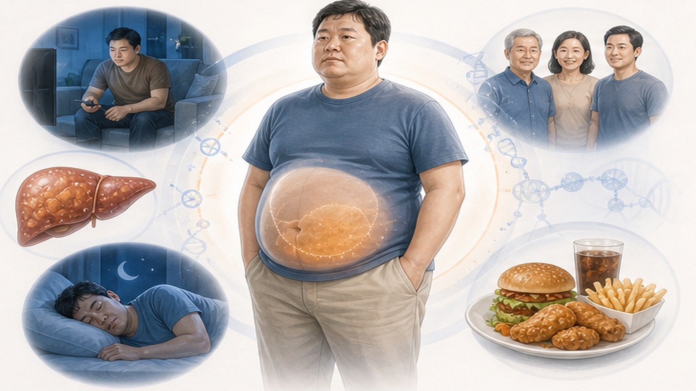
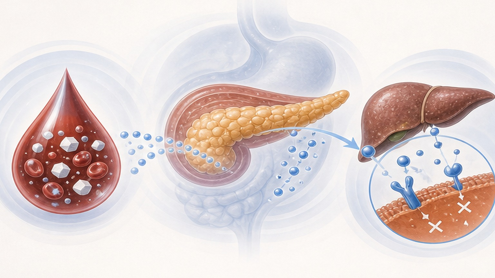
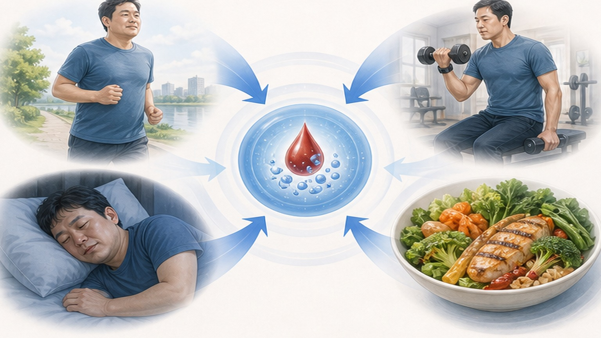
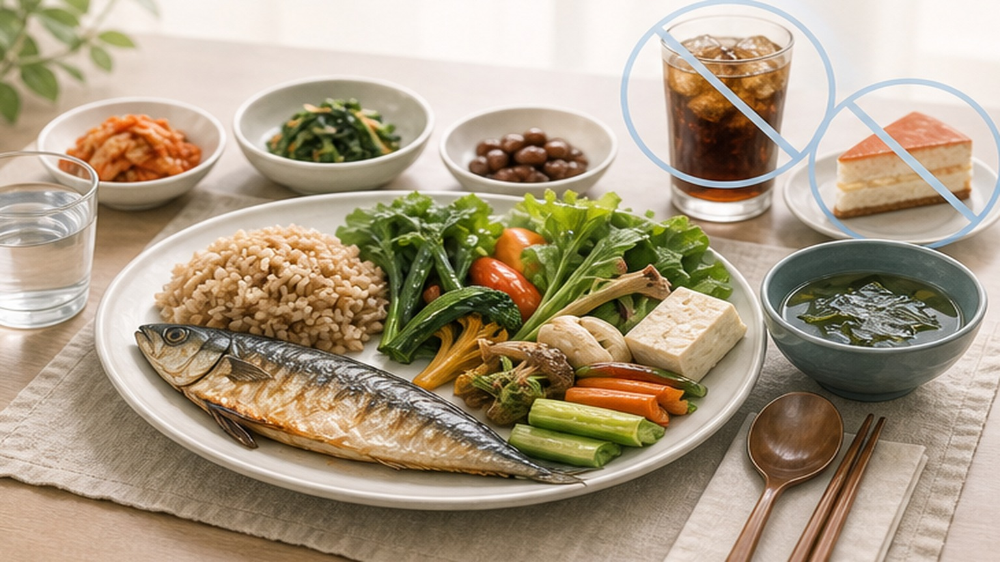

전당뇨(Prediabetes) 관해,
심근경색·심부전·사망 위험 절반으로
공복혈당이 97 mg/dL 이하로 회복되면 주요 심혈관 사건과 조기 사망 위험이 약 50% 감소합니다 — Lancet Diabetes & Endocrinology 2026 근거
전당뇨, "일단 추적만"의 시대는 끝났습니다
한국 성인 약 30%가 전당뇨 상태이며, 관해 여부가 향후 10년 심혈관 건강을 결정합니다
전당뇨 유병률
진행 비율
사망 위험 감소
전당뇨와 관해의 정의
아직 당뇨는 아니지만 정상보다 높은 혈당 상태 — 그리고 정상으로 되돌리는 길
전당뇨 진단 기준 (3가지 중 하나)
- 공복혈당장애 (IFG) — 공복혈당 100~125 mg/dL
- 내당능장애 (IGT) — 75g OGTT 2시간 140~199 mg/dL
- 당화혈색소 (HbA1c) — 5.7~6.4%
전당뇨 발생·진행 위험 요인 6가지
아래 항목이 많을수록 정기 검진 간격을 짧게 가져가야 합니다
과체중·비만
BMI ≥ 23 (아시아인 기준). 특히 복부비만(허리 男 ≥90·女 ≥85cm)이 핵심 인자입니다.
연령 ≥ 45세
나이가 들면 인슐린 저항성이 증가합니다. 40대 이후 매 3년 공복혈당·HbA1c 검사 권장.
당뇨 가족력
부모·형제 중 당뇨가 있다면 위험이 2~3배. 한국인은 가족력 양성률이 높은 편입니다.
신체활동 부족
주 150분 미만의 활동, 좌식 생활. 근육량 감소는 혈당 처리 능력을 직접 떨어뜨립니다.
고혈압·이상지질혈증
대사증후군 동반 시 위험이 더 큽니다. TG ≥ 150, HDL 남 <40·여 <50, BP ≥ 130/85.
임신성 당뇨 과거력
임신성 당뇨를 겪었던 여성은 평생 당뇨 발생 위험이 7~10배. 매년 검사 권고됩니다.

핵심 연구 결과 — 관해 시 위험비(HR)
미국 DPPOS + 중국 DaQingDPOS 통합 분석 (N=2,402, 평균 추적 16년)
공복혈당 97 mg/dL의 의미
단순한 컷오프가 아니라 진료실에서 환자에게 명확히 제시할 수 있는 동기부여 지표
왜 97 mg/dL인가?
- 일관된 효과 — 미국·중국 두 집단 모두에서 동일한 위험 감소 관찰
- 연령·체중·인종 무관 — 70대 노인·정상 체중·동양인에서도 적용
- 식이·운동 ROI 명확 — 환자 동기부여·교육 도구로 활용 가능
- 1차 진료 친화적 — 공복혈당 1회 측정만으로 평가 가능

관해를 달성하는 4가지 핵심 축
DPP·Look AHEAD·DaQing 연구가 공통으로 증명한 검증된 개입
체중 5~7% 감량
현재 체중의 5~7%를 줄이는 것이 가장 강력한 단일 인자입니다. 70 kg 환자 = 3.5~5 kg 감량 목표.
유산소 운동 주 150분
중강도 (빠르게 걷기·자전거) 주 150분 + 근력 운동 주 2회. 식후 10~15분 걷기는 즉시 효과.
저당·고섬유 식이
정제 탄수·당분 줄이고 채소·통곡물·생선·콩·견과 늘리기. 지중해식·DASH 식단 효과 입증.
금연·절주·수면
금연은 인슐린 저항성을 직접 개선. 하루 7시간 수면, 음주는 주 2~3회·1잔 이내로 제한.

관해까지의 일정 — 단계별 기대 효과
변화는 1개월부터 시작되며, 6~12개월에 의미 있는 관해 가능성이 30~40%에 도달합니다
공복혈당 5~10 mg/dL 감소. 식이·운동 습관 자리잡기 시작.
HbA1c 0.3~0.5% ↓. 체중 2~3 kg 감량. 첫 재검·계획 조정.
체중 5~7% 감량 달성. 공복혈당 ≤97 mg/dL 도달 가능.
관해 가능성 30~40%. 유지가 핵심 — 2년 이상 유지 시 효과 지속.
식이 권장 사항 6가지
단순 칼로리 제한보다 "무엇을 먹는가"의 질이 더 중요합니다
통곡물 우선
현미·귀리·통밀빵·잡곡밥. 흰쌀·흰빵·국수 비중 절반 이하로.
채소 하루 5색
색깔별 다양하게 — 매끼 접시의 절반은 채소로. 식이섬유 25g/일.
양질의 단백질
생선·콩·두부·계란·살코기. 가공육·붉은고기는 주 2회 이하.
견과류 한 줌
하루 30g (호두·아몬드·캐슈). 무염·무가당. 간식 대용.
물·차 충분히
하루 1.5~2L. 음료·주스·믹스커피는 당분 폭탄 — 끊거나 무가당으로.
정제 당류 피하기
설탕·시럽·과자·빵류. 디저트·야식은 주 1회 의식적 선택으로.

진료 즉시 필요한 위험 신호 6가지
아래 증상은 당뇨로 이미 진행했거나 합병증이 시작된 신호일 수 있습니다
잦은 갈증·다음다갈
평소보다 물을 자주 찾고 입이 자주 마른다면 혈당이 급격히 올랐을 수 있습니다.
잦은 배뇨·야뇨
밤에 2회 이상 깨서 화장실. 신장이 고혈당을 배출하는 보상 반응입니다.
의도하지 않은 체중 감소
식이·운동 변화 없이 한 달에 2~3 kg 이상 감소. 즉시 평가 필요.
시야 흐림·복시
고혈당으로 수정체가 부어 굴절이 변하거나 망막병증 초기 신호일 수 있습니다.
손발 저림·감각 저하
말초 신경병증의 초기 증상. 양말 신은 듯한 감각, 발끝부터 시작됩니다.
상처 회복 지연·감염
발의 작은 상처가 2주 이상 낫지 않거나 반복 감염. 당뇨발의 시작 신호.
환자 실천 체크리스트 7가지
오늘부터 시작할 수 있는 구체적 행동 — 작은 변화가 1년 후 큰 결과로
매주 1회 공복혈당 측정
동일 시간(아침 식전)에 측정·기록. 가정용 혈당계 또는 클리닉 방문 활용.
주 150분 빠르게 걷기
하루 30분 × 5일 또는 50분 × 3일. 식후 10~15분 걷기 더하면 효과 배가.
주 2회 근력 운동
홈트·스쿼트·플랭크·아령. 근육량이 늘면 혈당 처리 능력이 직접 올라갑니다.
체중 5~7% 감량 목표
6개월 목표 — 70 kg → 65~66 kg. 매주 동일 시간 측정해 추세 관리.
정제 탄수·단 음료 줄이기
흰쌀 → 잡곡밥, 음료수 → 물·차. 한 번에 다 끊지 말고 절반씩 단계적으로.
야식·과식 피하기
저녁 8시 이후 음식 줄이고 7~8시간 공복 유지. 잠자기 3시간 전 식사 마치기.
3~6개월마다 클리닉 재검
공복혈당·HbA1c·체중·혈압 추적. 진행 시 약물 치료 시기 함께 논의.
전당뇨는 되돌릴 수 있습니다
오늘의 작은 변화 — 1년 후 절반의 위험
검사 결과와 생활습관 계획을 함께 점검합니다 — 궁금한 점은 언제든 문의해 주세요
광교중앙로 298, 4층
토요일 08:30~13:30
같은 자료를 다시 볼 수 있어요